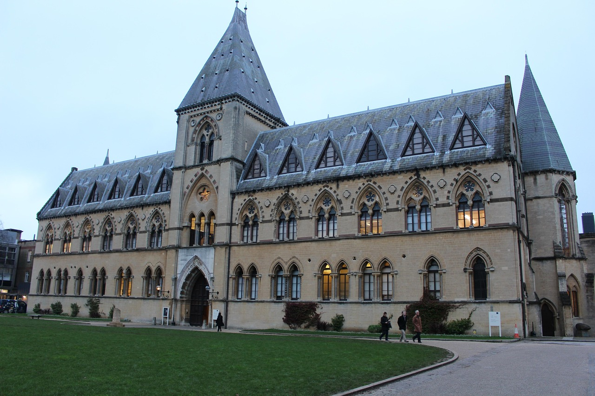
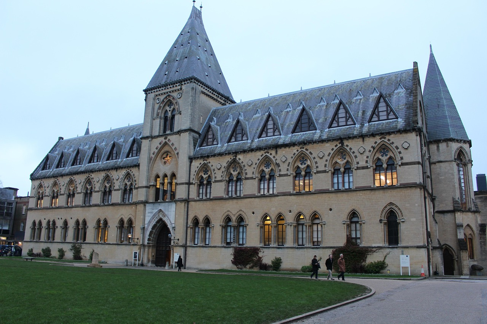
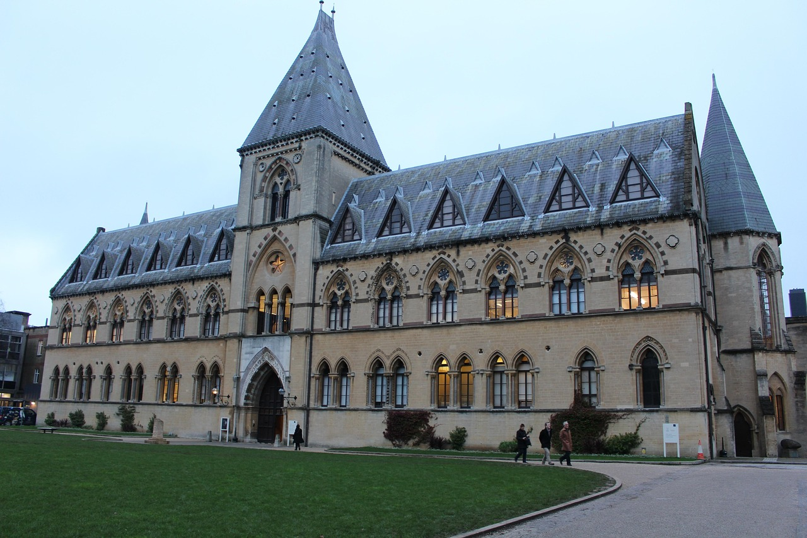

| Company | Contact | Country |
|---|---|---|
| Alfreds Futterkiste | Maria Anders | Shakib Al Hasan |
| Germeny | South Africa | Bangladesh |
Studying abroad is a transformative experience that offers students an opportunity to learn, explore, and grow in ways that go beyond traditional education. It opens doors to a world of new academic challenges, cultural immersion, and personal development. For many, studying abroad is a dream come true, and it has become a popular choice among students worldwide. One of the primary reasons students opt for studying abroad is to gain a global perspective. In today’s interconnected world, having an understanding of different cultures, languages, and worldviews is crucial. Studying abroad allows students to experience diverse education systems and methodologies, which enhances their learning and broadens their horizons. Whether it's attending top-tier universities in Europe or enrolling in specialized programs in Asia, the exposure to new academic environments is invaluable. Moreover, studying abroad provides a chance to build a global network of friends, professors, and professionals. These connections can play a pivotal role in shaping one’s career. The international experience gained from living and studying in a foreign country is highly regarded by employers. It showcases adaptability, cultural awareness, and a willingness to take on challenges — all qualities that are in high demand in the job market. Apart from academic and professional benefits, studying abroad also contributes to personal growth. It helps students become more independent, self-reliant, and confident. They learn to navigate new environments, manage their finances, and develop problem-solving skills. The challenges they face while living in a foreign country strengthen their resilience and enrich their overall character. In conclusion, studying abroad is not just about earning a degree; it is about creating lifelong memories, gaining a global perspective, and preparing for a successful future. It is an investment that goes beyond textbooks and classrooms — it’s a gateway to a world of opportunities
Studying abroad is a transformative experience that offers students an opportunity to learn, explore, and grow in ways that go beyond traditional education. It opens doors to a world of new academic challenges, cultural immersion, and personal development. For many, studying abroad is a dream come true, and it has become a popular choice among students worldwide. One of the primary reasons students opt for studying abroad is to gain a global perspective. In today’s interconnected world, having an understanding of different cultures, languages, and worldviews is crucial. Studying abroad allows students to experience diverse education systems and methodologies, which enhances their learning and broadens their horizons. Whether it's attending top-tier universities in Europe or enrolling in specialized programs in Asia, the exposure to new academic environments is invaluable. Moreover, studying
